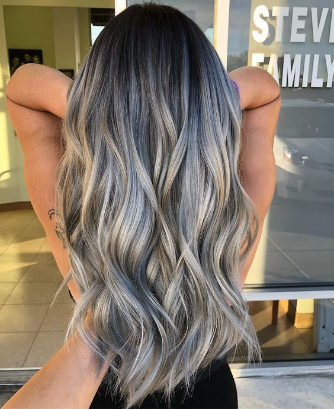

Nuestros servicios
| Servicio | Descripción | Imagen |
|---|---|---|
| Corte de pelo | Estilos modernos y clásicos adaptados a cada cliente. | |
| Peinados y recogidos | Peinados elegantes para eventos especiales o estilos naturales para el día a día. | |
| Coloración y mechas | Tintes, reflejos y técnicas de coloración personalizadas. |  |
| Tratamientos capilares | Hidratación, keratina y otros cuidados para la salud del cabello. |